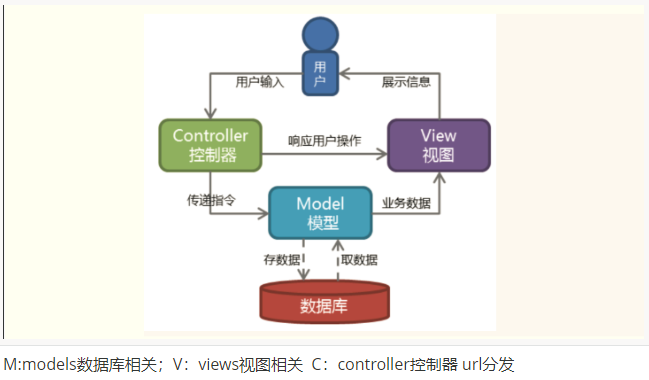
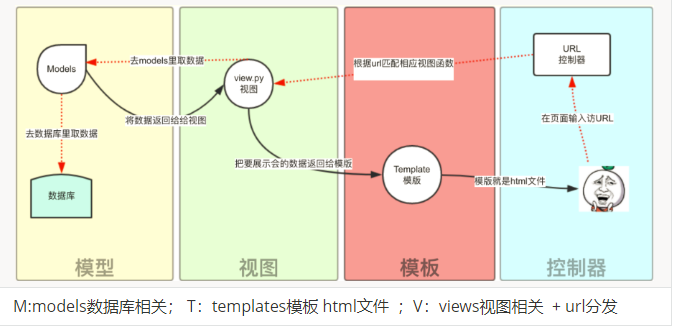
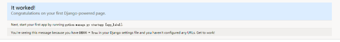
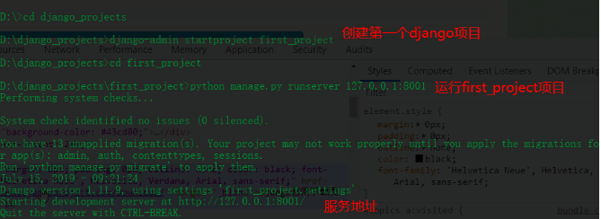
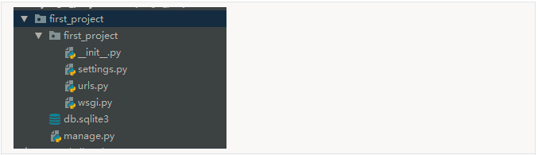
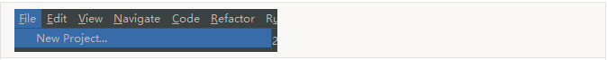
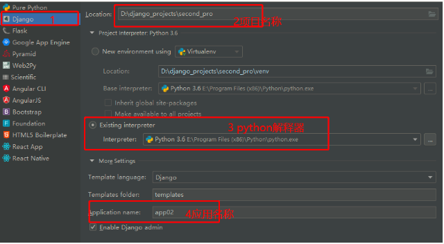
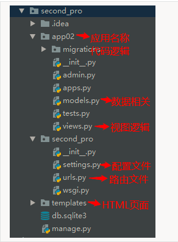

Web服务器开发领域里著名的MVC模式，所谓MVC就是把Web应用分为模型(M)，控制器(C)和视图(V)三层，他们之间以一种插件式的、松耦合的方式连接在一起，模型负责业务对象与数据库的映射(ORM)，视图负责与用户的交互(页面)，控制器接受用户的输入调用模型和视图完成用户的请求，其示意图如下所示：

| M:models数据库相关；V：views视图相关 C：controller控制器 url分发 |
Django的MTV模式本质上和MVC是一样的，也是为了各组件间保持松耦合关系，只是定义上有些许不同，Django的MTV分别是值：
除了以上三层之外，还需要一个URL分发器，它的作用是将一个个URL的页面请求分发给不同的View处理，View再调用相应的Model和Template，MTV的响应模式如下所示：

| M:models数据库相关； T：templates模板 html文件 ；V：views视图相关 + url分发 |
一般是用户通过浏览器向我们的服务器发起一个请求(request)，这个请求回去访问视图函数，（如果不涉及到数据调用，那么这个时候视图函数返回一个模板也就是一个网页给用户），视图函数调用模型，模型去数据库查找数据，然后逐级返回，视图函数把返回的数据填充到模板中空格中，最后返回网页给用户。
pip3 install django==1.11.9django-admin startproject first_project #创建了一个名为"first_project"的Django 项目：python manage.py runserver 127.0.0.1:8001
python manage.py runserver 8001 #本机就不用写ip地址了
python manage.py runserver #如果连端口都没写，默认是本机的8000端口这样我们的django就启动起来了,只不过什么逻辑也没有呢！
当我们访问：http://127.0.0.1:8080/时就可以看到：


当前目录下会生成first_project的工程，目录结构如下：（大家注意昂，pip下载下来的django你就理解成一个模块，而不是django项目，这个模块可以帮我们创建django项目）

python manage.py startapp app名称
在settings中配置
'app01.apps.App01Config' 或者'app01'1.file -->new project

2.Django -->项目名称 -->选择Python选择器 -->应用名称（业务逻辑相关的程序）


写一个Django项目：
做一个登录页面的Web项目，浏览器输入网址得到一个web页面
输入网址：127.0.0.1：8000/login/
1.创建项目 second_pro
2.创建app app02
3.urls.py
from django.conf.urls import url
from django.contrib import admin
from app02 import views
urlpatterns = [
# url(r'^admin/', admin.site.urls),
url(r'^index/', views.index),
]
4.views.py 写逻辑视图
from django.shortcuts import render,HttpResponse
# Create your views here.
def index(request):
# print(request.method) #获取请求方式GET或POST
if request.method=='GET':
return render(request,'login.html') #回复一个页面
else:
username=request.POST.get('username') #获取post数据
password=request.POST.get('password')
if username=='anwen' and password=='123':
return HttpResponse('登录成功！') #回复字符串
else:
return HttpResponse('登录失败!')
5.在templates文件夹中创建login.html 页面
<!DOCTYPE html>
<html lang="en">
<head>
<meta charset="UTF-8">
<title>login</title>
</head>
<body>
<form action="/index/" method="post">
<div>
用户名：<input type="text" name="username">
</div>
<div>
密码： <input type="text" name="password">
</div>
<input type="submit">
</form>
</body>
</html>
注意：
1.urls.py 里面需要注意的问题：
url(r'index/',views.index) #第一个参数路径正则字符串，第二个参数对应的视图逻辑
2.
def index(request):
# print(request.method) #获取请求方式GET或POST
request.GET ---GET请求发送来的所有数据，queryDict类型
request.POST ---POST请求发送来的所有数据，queryDict类型
request.GET.get('username') #获取get数据
request.POST.get('username') #获取post数据
return render(request,'login.html') #回复一个页面
return HttpResponse('登录成功！') #回复字符串
def index(request):
print(retuest.GET) #<QueryDict:{'username':'anwen','password':['123']}>
username=request.GET.get('username')
password=request.GET.get('password')
print(username,password)
if username=='anwen' and password =='123':
return HttpResponse('登录成功')
else:
return HttpResponse('登录失败')post请求提交数据时关掉一个认证机制，settings配置文件中
MIDDLEWARE = [
'django.middleware.security.SecurityMiddleware',
'django.contrib.sessions.middleware.SessionMiddleware',
'django.middleware.common.CommonMiddleware',
# 'django.middleware.csrf.CsrfViewMiddleware',
'django.contrib.auth.middleware.AuthenticationMiddleware',
'django.contrib.messages.middleware.MessageMiddleware',
'django.middleware.clickjacking.XFrameOptionsMiddleware',
]无名分组
url(r'^books/(\d{4})/',views.books) #(\d{4})位置参数
url(r'^books/(\d{4})/',views.year_books) #匹配年份
url(r'^books/(\d{4})/(\d{1,2})/',views_year_month_books) #匹配年份和月份
#http://127.0.0.1:8000/books/2019/2/
视图:
def year_month_books(request,year,month): #位置参数 ，第一个参数接收的是无名分组路径中匹配到的第一个的分组数据，第二个参数接收到的就是无名分组中路径中匹配到的第二个分组数据
print(year,month)
分组命名匹配
在Python的正则表达式中，分组命名正则表达式组的语法是(?P<name>pattern)，其中name是组的名称，pattern是要匹配的模式。使用命名组的重写
url(r'^books/(?p<year>\d{4})/(?p<month>\d{1,2}/',views.year_month_books)#匹配年份和月份
def year_month)books(request,.month,year):#形参名称要和url中的分组名称对应，参数位置没有顺序要求
print(year,month)默认值
#urls.py中
from django.conf.url import url
from . import views
urlpatterns=[
# 视图函数中指定默认值,如果第一个模式匹配上了，year_books()函数将使用其默认参数num=“1”,如果第二个模式匹配，year_books()将使用正则表达式捕获到的num值。
url(r'^books/$', views.year_books),
url(r'^books/(?P<num>\d{4})', views.year_books),
]
#views.py中
def pag(request,num='10'):
pass#是否开启URL访问地址后面不为/跳转至带有/的路径的配置项
APPEND_SLASH=True
Django settings.py配置文件中默认没有 APPEND_SLASH 这个参数，但 Django 默认这个参数为 APPEND_SLASH = True。 其作用就是自动在网址结尾加'/'。其效果就是：我们定义了urls.py：
from django.conf.urls import url
from app01 import views
urlpatterns = [
url(r'^blog/$', views.blog),
]
访问 http://www.example.com/blog 时，默认将网址自动转换为 http://www.example/com/blog/ 。
如果在settings.py中设置了 APPEND_SLASH=False，此时我们再请求 http://www.example.com/blog 时就会提示找不到页面。#项目文件夹下的urls.py文件中的url写法:
from django.conf.urls import url,include
from django.contrib import admin
from app01 import views
urlpatterns = [
# url(r'^admin/', admin.site.urls),
#首页
url(r'^$', views.base),
url(r'^app01/', include('app01.urls')),
url(r'^app02/', include('app02.urls')),
]
#app01下urls.py内容写法
from django.conf.urls import url
from django.contrib import admin
from app01 import views
urlpatterns = [
# url(r'^admin/', admin.site.urls),
url(r'^$', views.app01base),
url(r'^index/', views.index),
]
#app02下urls.py内容写法
from django.conf.urls import url
from django.contrib import admin
from app02 import views
urlpatterns = [
# url(r'^admin/', admin.site.urls),
url(r'^$', views.app02base),
url(r'^home/', views.home),
]
我们自己写的url里面的路径有没有可能会更改，如果路径更改了，那么我们前端访问这个路径的标签（a标签，form表单等等）里面的属性值是不是也要自己手动去改啊，这样我们拓展起来就不方便了，你想是不是？尤其是前端可能不是你写的，那你是不是要进行部门沟通啊，想一想怎么办？
在使用Django 项目时，一个常见的需求是获得URL的最终形式，以用于嵌入到生成的内容中（视图中和显示给用户的URL等）或者用于处理服务器端的导航（重定向等）。
简单来说就是可以给我们的URL匹配规则起个名字，一个URL匹配模式起一个名字。这样我们以后就不需要写死URL代码了，只需要通过名字来调用当前的URL。
举个简单的例子：
url(r'^home', views.home, name='home'), # 给我的url匹配模式起名（别名）为 home，别名不需要改，路径你就可以随便改了，别的地方使用这个路径，就用别名来搞
url(r'^index/(\d*)', views.index, name='index'), # 给我的url匹配模式起名为index在模板里面可以这样引用：
{% url 'home' %} #模板渲染的时候，被django解析成了这个名字对应的那个url，这个过程叫做反向解析在views函数中可以这样引用：
from django.urls import reverse
reverse("index", args=("2018", )) #带参数的